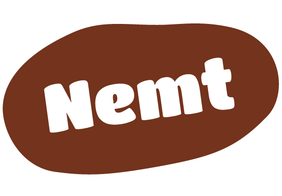
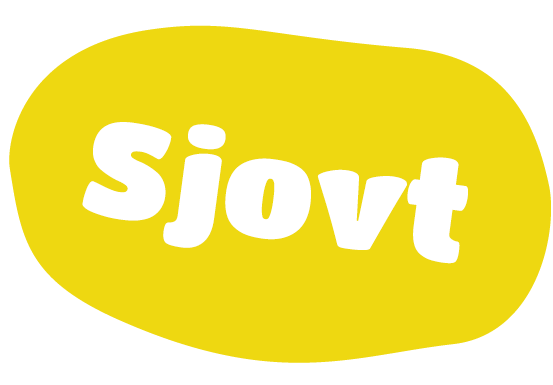
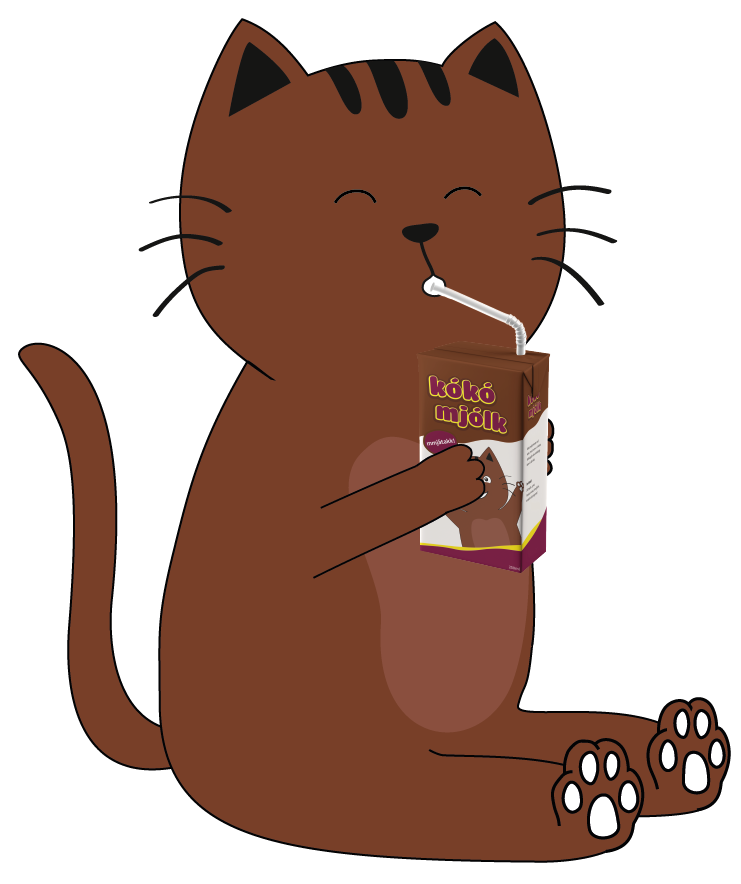

Ny emballage
og en ny kat!
Nu er det 46 år siden den første kókó mjólk kom på markedet Vi har beholdt det samme logo og stil gennem årene, så nu er det tid til en opgradering! Skotti, den gamle kat er gået på pension, og nu byder vi hans søn Moli velkommen til familien! Moli er det nye ansigt på Kókó mjólk




Nu kan du også få Kókó mjólk i en 500 ml glasflaske!
Perfekt til brunch eller eftermiddagsmad.
Nybagt brød og en kold flaske Kókó mjólk? mmmjátakk!